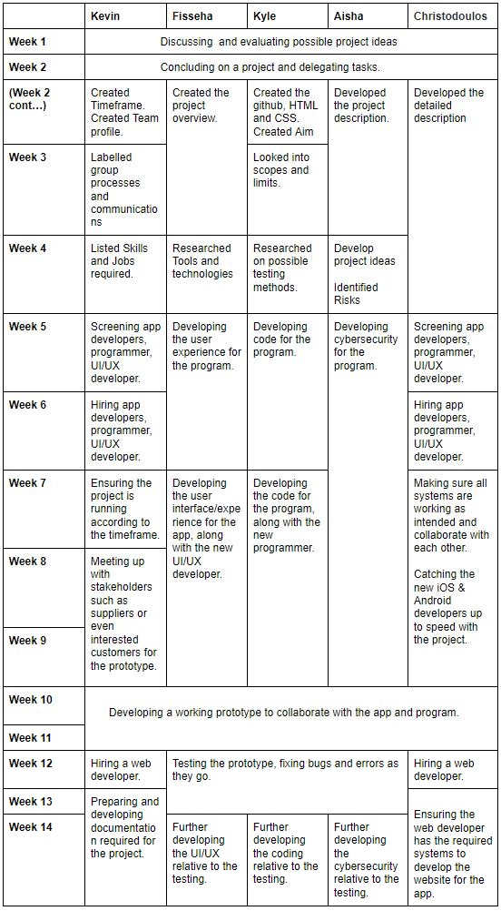

CHAMPIONS
Smart Home Security System
TEAM PROFILE
Fisseha Abate
Student number: s3850910
Ideal Job: Web Developer

My name is Fissehatsiyon Abate. My friends call me Fisseha, as my full name is apparently excessively lengthy and somewhat difficult to pronounce, according to them. I was born in the capital of Ethiopia, Addis Ababa. I grew up there until the age of 12 before coming to Australia in late 2014. I can fluently speak two of the eighty languages in Ethiopia. Those I speak are Amharic and Ge'ez. The first five years of my stay in Australia were in Adelaide, South Australia. I recently moved to Melbourne with my family after completing Highschool. I have so far enjoyed the couple of months that I have been here in Victoria. As most Ethiopians are, I am a big follower of Soccer. Although I do not do much playing these days, I passionately support Manchester United F.C. which is a club in England's top soccer league. I also do a lot of drawing and painting in my spare time which I at one-point thought was going to be the career I would pursue. Even though I have not done a lot of artwork, I still consider myself an artist. One rather interesting fact about myself is that I'm one of the 5% of the world's population who does not experience headaches.
Aisha Begum
Student Number: S3854403
Ideal Job: Cyber Security Analyst

My name is Aisha Begum, I am from India. We migrated to Australia when I was 10 years old, at home we usually speak in Hindi. An interesting fact about me is that i can speak around 4 languages Hindi, Urdu, English, and Punjabi. I have completed grade 5 in India and then continued my studies in Australia. I completed year 12 last year, and now I am studying Bachelors of Information Technology, at RMIT. I choose to study IT because of my passion for learning about the way the computer system works and how it allows us to work effectively.
Kevin Nguyen
Student Number: s3657016
Ideal Job: Business/Systems Analyst

I am 100% Vietnamese, born and raised in Melbourne's West. As of now, I have only completed my secondary education moving onto completing my tertiary education with the bachelors of Information Systems, outside of school I love to play volleyball as frequently as I can.
Christodoulos Voulismas
Student Number: s3850105
Ideal Job: IT Operations Manager

My name is Christodoulos Voulismas but most people call me Chris.My student number is s3850105 and my email is chrisvoulismas@gmail.com. I was born in Greece and i lived there for 18 years. I graduated from high school last year and i speak greek and english fluently. Also i am very good at basketball and i enjoy playing because i used to be in a greek team for 7 years.
Kyle Wilkinson
Student Number: 3836778
Ideal Job: Frontend Developer

I was born in Australia and have never been outside the country. I grew up in a small town by the name of Drouin, finished my VCE at the local high school and begun a bachelor of IT at Federation University, After a year and a bit of work, I had to leave. I applied for RMIT and began studies the next year. I now live in a sharehouse with like-minded individuals, study full time and work 4 days a week at Bunnings.
I spend the bulk of my time working and studying and in my downtime I enjoy building recycled furniture, enjoying and creating music and spending valuable time with friends.
Group Processes
The team meshed well together in assignment 2 and there were no issues with cooperation all around. Although communication was fluid, not all of our discussions had a direction, in assignment 3, the team plans to create more of a direction before jumping into conferences to be more productive.
Team Comparison
Project Idea
The Smart Home Security System works simple, this system recognises the users with their fingerprints and their voices they will have to be registered before they can have access to the system. The doors do not have handles and the user do not need to carry a key to be able to unlock the door, the user can unlock using their fingerprints. After entering they can also be recognised as they speak for example if they would like to check the cameras all they have to say is “Open Cameras” and the system will automatically turn on the TV and you would be able to check the cameras, this could be accessed in many different languages.
To able to allow guests to enter the house, any registered members could say “Let me in” to allow them to enter the house or they can scan their fingers from inside the house and the door will open. However, before opening the door the system will scan if a person is safe to enter you will hear “Welcome to our house” after scanning has completed and the door will open (this would take about 2 – 3 sec) however if they are carrying any sort of weapons or are unsafe you will hear “Access Denied” and the alarm will be turned on automatically after 20 seconds meanwhile the system would show you why it has blocked access, however, if you think it’s an error and you would like the person to enter you would be able to allow access from inside the house by stopping the alarm and giving access.
While Parents are away they can check on their children easily just by texting on the security app which will be linked to the security system all they have to do is to text “what is everyone in the house doing” the application would reply by checking the sensors that are in use for example “ they are 5 people in the house 2 people are detected in the study room and the rest of them are in the living room.
Parents can also give a message to all their children present in the house at once they do not have to individually call each one of them to inform them. On the app they can message saying “a message for family” and then they can either video record, audio record or just text (the system will read it out to everyone). An example for video/audio message “A message from ___ playing audio/video” for a text is “___ has sent a message saying “……”” the listeners can re-listen to a message as many time as they want, messages will be deleted after 24 hours a message could be saved by any registered member using the app, they will have private access to the message.
The likely problems users may face are caused due to loss of power and Wi-Fi, as the system is electronic we need to make sure that the users can enter and exit the house in any circumstances, the huge concern is to make sure that only registered members can enter even if there is no power. As the system can't work during a power outage, we concluded that a Backup Battery is the best option for the user to continue using the app, as it will provide power to the system when the primary source of power is unavailable.
Furthermore, the problems user could face may include registering newborn, people with disabilities, and people with special needs into the system, this could be solved by providing the users to use other biometric Authentication such as voice recognition and face recognition. Newborn could be registered as a dependent under parents or other registered members, the dependant users will have to enter and exit the house with an independent user.
Project Description
What Does it do?
The main purposes of using the Smart Home Security System is very clear to protect and secure homes. The benefits of having a Smart Home Security System are obviously. From preventing break-ins to calling emergency responders on your behalf. Smart Home Security System helps you to protect your family and you’re property, Every 13 seconds a home burglary takes places, 4 burglaries a minute, 240 an hour and nearly 6,000 a day, burglary rates of homes state that 1 in 3 homes without a security system will fall victim to a burglary as compared to 1 in 250 homes that do have a security system, through the facts it can be claimed that there is an immediate need of installing the Security System.
Furthermore, the Smart Home Security System doesn’t only protect the users from burglaries, however it also protects homes from fires. This is very important as in about every twenty seconds a home fire is reported. The Smart Home Security System will provide an early warning system for smoke in the home as well as warn of sources of the heat. Heat detectors are added to the Smart Home Security System these detectors can determine if a fire is building in the area of the home and provide advanced notice of even the smallest of changes in heat. And that can prevent further damage from fire.
Additionally, the Smart Home Security System also helps to protect and manage electricity. This Smart Home Security System can be used to monitor your home's energy use. This is very important as we mostly leave homes and realize that we have left the lights on or some appliance running. However through the Smart Home Security System gives you remote access, it allows you to shut off the appliances no matter where you are. It can also be used to shut down heating or cooling devices when no one is home and to turn them back on just before you arrive.
Moreover, the Smart Home Security System gives you comfort when travelling as this surveillance system provides the users with the ability to monitor their homes no matter where they are. This can provide a feeling of peace to the users as they will be able to check on their home wherever they may be in the world.
Perhaps the biggest benefit of having a Smart Home Security System is that it monitors homes at all times even when the users cannot do it. This system offers 24/7 monitoring and can track any significant events that occur at the home while you are away and dispatch emergency personnel if necessary.
Furthermore, the Smart Home Security System helps many homeowners, especially those who live alone or are of an advanced age, may have concerns about medical conditions that they suffer from. The Smart Home Security System is equipped with medical alert pendants that can be used in order to have emergency vehicles dispatched directly to the home when they are pulled. And that's the importance of a Smart Home Security System.
Overall, the main reason to have the Smart Home Security System is simple it provides you with the peace of mind in knowing that you, your family and your home is secure, whether you are at home or on the road. When you are at home you can fully relax knowing that you are safeguarded from theft, vandalism, fire, and other threats. When you are traveling you know that your alarm system will alert the authorities and will protect the house from any problem that occurs.
What is the likely impact?
The likely impact caused to the Smart Home Security System, is due to the cloud storage as the users are forced to keep their computing infrastructure or data centres on proprietary hard drives or local storage devices. These practices were extremely problematic as On-site data centres typically require intricate procedures such as hardware setup, software patching, and other time-consuming IT management chores as well as high maintenance costs. However, the best thing about cloud storage is that it removes the need for many of these tasks, as software and platforms are managed by the cloud provider, thus helping users achieving more important business goals and in turn bringing faster innovation and flexible resources to the user.

Furthermore other likely impact is to help the customer to ensure that they know what they are buying and where it is from, for example, in our case we could show a demonstration on how the security of the product works, and show that the privacy of the users is protected. The Smart Home Security System could use a blockchain technology to access patient’s registration details to allow the users to enter, also this information is stored and controlled by the users themselves.
Additionally, the likely impact caused to The Smart Home Security system this is very important as Augmented Reality is starting to drastically change with technology. With our product in future we can make update using Augmented Reality for example allowing the users to leave a note instead of writing it on a paper, I would be easier for him to use Augmented Reality and just writing it on a paper that will pop up on the wall using a mobile phone or smart glasses, and just simply saving it. Through the use of this anyone in the house is able to notice and reduces the risk of misplacing papers.
How will this affect you?
The Smart Home Security System will affect everyday life in a positive way. The cloud storage will most likely be used for the storage services. The Smart Home Security System has a reliable and easily accessible storage /back-up Security System. In this aspect, Cloud storage does an exceptional job. Once my data is stored in Cloud storage, it is simpler to get the back-up and recovery of that, which could otherwise be an excessively time-consuming process on-premise. Overall, cloud storage will have a positive impact on the user’s daily life. Similarly, the difference that Cloud computing could bring is flexibility. Having cloud storage means that the user would no longer need to worry about checking if the data is saved in the 'correct' devices and go through the hassle of carrying hard drives in order to store large files. The users would also avoid unfortunate events of forgetting important files stored on physical drives as well as physical damage of file storage devices. With could computing, the user can access any data he desires at any time and have significantly larger capacity. Furthermore, through the use of cloud storage it will benefit the user by saving cost, security and flexibility.

Additionally, the positive effect of Smart Home Security System on everyday life is using home hubs to switch lighting or cooling/heating on/off remotely. Furthermore, the Smart Home Security System provides, biometric locks, motion triggered cameras, smart doorbells, this will affect everyday life as the users would not need to carry a key to open the door, therefore this is a positive affect as mainly people forget their keys inside the house or lose them, therefore having the Smart Home Security System would reduce the save users cost as the users cannot forget their keys inside, or even if they leave their lights open they can easily using phones even if they are not home.
Overview
Topic
The proposed smart home security solution is a system that integrates mobile applications with mechanical and graphical devices in order to ensure the safety of users’ houses. Implementation of this system involves putting in place a wide range of mechanical devices such as fingerprint scanners, face and voice recognition systems, video surveillance and others to transform the traditional ways of home safety management. In doing so, the system will eliminate the need for doors to have handles and users to carry around any physical keys, and rather utilise biometric authentications to deny or grant access to selected parts of the house.
The aforementioned devices will all be governed by a smart hub located inside the users’ house which will be used in conjunction with the mobile app. The mobile app, that comes with the smart homes security system, will primarily be used to manage and interact with the whole security system. The app will enable users to register authorised individuals into the system, record data involving the identity of the authorised individuals, and set certain preferences to their likings. Through the app, authorised users will gain accesses such as access to 24/7 video surveillance cameras, voice messages, manual control of doors and much more.
Motivation
The development of this home security system was motivated by the group’s deep interest in developments of innovative systems that are readily applicable and assist in solving common problems in society. The importance of this project is undoubted as ensuring the safety of family, home and valuables is a priority for every individual and assisting in this task with the use of high complexity technologies is something that is this group's common interest.
Assessing the components and applications of this system shows how well it fits with the current IT trend as the system comprises up-to-date and ultra-modern technologies such as face recognition. If the possibility of working on this project was to become real, it would show a great range of skills of a future employer, such as app development, cloud computing and project management and much more.
Landscape
There are numerous smart home security products that are available on the market. Even though they are all under the same category of ‘home security‘ there are differences when it comes to the way they operate and are installed. That being said, although there aren’t many products that encompass all features of the smart security system proposed, there are however various products that primarily focus on partial features of our smart security system such as smart door locks, smart video surveillance systems etc. The most popular home security products on the current market include Ring, Vivint
SimpliSafe, ADT, Frontpoint etc.
Detailed Description
Aim
Making the home feel safe again
This project is built around the idea of living within a safe home. We plan to achieve this by making the house as smart as possible when it comes to security. The main security feature is at the front entry of the property. Safety is achieved with a handle free door, removing many methods used by intruders to gain access such as picking a pin tumbler lock like a deadbolt or any other traditional entry system using physical keys. The absence of a handle ensures intruders cannot access the property by disassembling the handle or even entering when carelessly left unlocked. The safety features delve further into more of a smart home system from there, allowing users to access cameras and speakers throughout the house to Surveille the premises, as well as other functions such as addressing the occupants through speakers and being alerted when a potential threat occurs.
Goals
Goals are arranged in order of recommended implementation priority.
-
Stress free entry to the home
Stress free entry to the home or premises is achieved by implementing the main feature of the project, the door. This entryway does not include any handles or pickable locks but uses IOT devices that are interconnected through a central hub. These entryway devices include a fingerprint scanner, cameras with facial recognition software, a microphone with voice recognition and a speaker to inform or dissuade users when entering. One or more of these features need to be validated for entry to be granted, this is up to the user’s discretion. This function is to ensure the safety of the occupants and the users valuables.
-
User friendly controls
To achieve a set of controls that can provide a user-friendly experience, a central hub that connects all the implemented devices will need to be installed in the house. Having a central hub ensures users can access their smart home security system via a mobile and desktop application. The mobile and desktop application will both contain all the same functionalities, ensuring that the user only needs one application format to connect to their home. With the application the user will have a variety of functionalities available to them such as: allowing entry to guests, the ability to Surveille upon occupants/house, send either voice or video messages through different devices and identify individuals within the household.
-
The ability to access smart devices within the home
This project is intended to have the ability to connect to other smart devices around the home. These devices can be a 3rd party addition to the project or implemented directly from the installation. Device types range from: speakers, TV’s, cameras, microphones, fingerprint scanner and deadlocks. These devices can be accessed from a desktop or mobile application. With the ability to add additional devices to the system, we give users a customizable experience.
Plans and Progress
We have decided to continue with the same project idea in this assignment as well, since everyone in our team agreed that it was a good idea. However we have made some small changes and thought of more details to make it work and what tools will be necessary. We also came across dead-ends and some problems but luckily we managed to resolve.
Our project is a smart home security system. When at first a buyer purchases this security system a team from the company will arrive at the customers home in order to set it up and install it. The price of the product will be estimated around to 10.000$. The security system will contain 4 cameras. Another feature that will be provided is a new door with a device that will consist of a microphone with an integrated speaker, a small scanner under it that will allow the user to touch with his finger in order for his fingerprints to be recognised and a small camera making it possible for the people who are inside can see who is outside on the screen. Also the system will come with a screen that will be installed inside the house in order to allow the user to monitor the house through the cameras. If the user wants to change the screen and buy a bigger one for example he can replace it with one of his choice. The front door will also be replaced by the company with a door that will not have a keyhole or a handle to open it but it will only have the device in the middle with the microphone and speaker, the camera and the screen for the fingerprint. The main device that will control everything will be a cube that can hear commands by the members that are signed in the device. Additionally, the Smart Home Security System also helps to protect and manage electricity. This Smart Home Security System can be used to monitor your home's energy use. This is very important as we mostly leave homes and realized that we have left the lights on or some appliance running However through the Smart Home Security System gives you remote access, it allows you to shut off the appliances no matter where you are. It can also be used to shut down heating or cooling devices when no one is home to turn them back on just before you arrive. Finally the cameras, the main device and the device on the door will have an integrated battery where as in a power cut the system will no doubt continue to function.
The cameras will come in two colours and the buyer can choose between white and black. When the system is first bought it comes with the 4 cameras. The buyer will be able to decide where he wants to install each either outside or inside the house. If the user decides later on he will be needing more extra security for his house he can purchase them from the website and these will also be installed by the company with no extra charge. In order for the cameras to be accessed the user will have to say a specific phrase which is “Access cameras” and the screen will open showing all cameras. Then if the user wants to have only 1 camera on the screen he will need to say “Check camera 1” or any number he wants based on how many cameras the house has. By saying “All cameras” the screen will return to the previous feature showing all 4 cameras and if the user wants to turn the screen off he will have to say “Close cameras”. If a blackout occurs and there is no electricity the battery that the cameras have, will allow them to function for at least 10 hours recording all possible actions.
The company will also replace the old front door with one that has the device on it. We were not very sure of the material that the door will have but we thought that thick wood would be the best. Not only it will be secure but it will also have a nice design. This door will not have a keyhole, but only a small square device in the middle. This device will have a microphone so that the members that are in the house can listen to the person that is outside, a camera so the members inside the house are always aware of what is happening outside the door.

If there is going to be movement outside the door, instantly the camera will pop up in the screen so the user will be able to see who is outside. Also the device will have an integrated speaker that will allow the person that is outside to hear anyone speaking from the inside. Finally the device will have a fingerprint scanner that any family member can have access to, if they are registered. Once they are registered they will be able to enter the house very easily without having to enter a key. If a guest comes to the house in order to let him in, a family member has to scan his fingerprint or tell the main device the phrase “Open Door”. However, the problems users could face may include registering babies, people with disabilities, and people with special needs into the system, this could be solved by providing the users to use other biometric authentication such as voice recognition and face recognition. Babies could be registered as a dependent user under parents or other registered members, so the dependant users will have to enter and exit the house with an independent user. The door will also have a battery that will allow signed members to use for 10 hours after a blackout.
The main device is the most important and responsible for the whole system. This device also comes in black and white. As mentioned before this main device will be responsible for the cameras the device door and also connected with the app. Firstly if someone is outside the door the device will scan the person. If there is a person visiting for the first time the device will scan him/her. The device will also have the ability to sense if the person is holding any sort of dangerous weapon, if so it will announce out loud the phrase “Access denied” and the alarm will go off automatically after 20 seconds. After that the device will show message on the screen, showing you why the person that is outside is not allowed to enter. If the device was wrong and the person outside was someone that the family was waiting to come, a member in order to cancel everything he will need to say “Cancel alarm” and then “Open door”. The door will take 2 seconds to open. Another feature that the main device has, is that while the parents are away, they can check on their children easily just by texting on the security app which will be linked to the whole security system, and all they have to type is “Give feedback of the house” and the application after checking every camera in the house will instantly reply. For example “5 people in the house, 2 in the study room, 3 in the living room”. Parents can also send a message to all their children present in the house at once without having to send each child individually a message. On the app they will be able to send a message to the device, and the device then will say out loud, “Message from this member” then the device will proceed to read the text out loud. If the children miss the message, there will be no problem because the device keeps every message for 24 hours saved, so they can listen to it after a while or even listen to it again as many times they would like.
For the users to check the cameras and interact with the system, there will be an app named “Safe Home”. When the user has downloaded the app and opens it for the first time it will ask the user to enter a password that will be given when the system is bought. Once the user has entered the password he will be able to check the cameras with his mobile phone, interact with other appliances, send messages to the device and also open the door. Every member that is signed in can download the app and use the same features. Also when a user ins not home he can turn on the heater with his phone before he arrives home or turn off appliances that have been forgotten on. If a member is not signed in and tries to use the password to gain access to the system a message will be sent to the signed members telling them that someone is trying to enter the system. For a member to get signed into the device he will need to press the button on the device that will then tell the user to say some commands so the device can record his voice. The device will say the commands out loud and the user will have to repeat them.

The device then will say “Use the fingerprint scanner” and the user will have to use his fingerprint on the door so his fingerprint can also be saved. The last part will be for the face recognition, so the device will say “Stand outside the door”. The user will have to stay in the front door for 5 seconds so the camera can take some pictures. When the user has finished everything the device will say out loud “You are now a signed member” and then he will be able to use the passcode on the app.
After some research we did on other companies and similar systems, we believe that our smart home security system is a very good project idea because we were dedicated to create a good security system and we also checked reviews from other systems and saw what mistakes and flaws they had so we tried to avoid them in our project idea.
Roles
Lead Developer - Kyle
For our project, the team decided that Kyle was best suited for a leader role as his traits best represented a ‘leader’. Kyle was also assigned as a developer for the project as it aligned along with his future aspirations.
Techinical Designer - Kevin
Kevin will list the technical requirements of the architect and ensure the project is meeting deadlines. Kevin will also be a part of the hiring process for the new team members and will be the mediator between stakeholders.
User Interface Designer - Fisseha
This role best suited Fisseha because he aspires to become a web developer, although it does not exactly align with his future career, it is somewhat relative to being a web developer as it is important to keep usability in mind when developing sites.
Security Lead - Aisha
Aisha took under the security lead role as she plans on becoming a cyber security analyst in the near future. Aisha has the most keen interest and the best suited expertise to suit the role.
IT Operations - Christodoulos
Christodoulos will oversee the day-to-day operations of the project to ensure we have the latest software architecture and the correct infrastructure. He will be responsible for bringing the new talent on board and overlooking them.
Scope and Limits
Scope statement: To build a smart home security system
This smart home security system will primarily be focused on the entryway to the household. The main deliverable will be a new custom door fitted with an IOT deadlock, fingerprint scanner and camera. These devices can all be controlled through different methods such as voice, fingerprint or even a mobile based application to gain entry to the house while providing security and safety from intruders. This project will satisfy clients needs to feel safe inside their home.
This project was created, to fulfil peoples need to feel safe within their home, creating a smarter and more secure entryway to the property. Being the main entrance to a house, we as a team felt it was the most important safety aspect of a house. The constrains of this project are far and wide, being a security system, a demo model would not be able to include everything we have to offer. The following is a list of project constraints:
-
Project cost
The cost of the project would be quite deer when everything is taken into account, The physical devices take up the bulk of the cost, such as a new door and all the cameras and speakers. Installation and labour may also increase the cost of the project.
-
Client’s aesthetical preferences
The front door is often a particular design feature of households and the need for a new door may not fit the clients idea of home design.
-
Installation labour
This is dependent on the location of the household and the availability of trained personal.
Assumptions of the project are that the clients entryway has space available for the new door, cameras and scanner. The installation requires good weather and trained personal available. The inclusions of the initial base installation would be solely the new entryway installation and a central hub. Many of the extra features such as speakers and cameras throughout the household will not be initially included to ensure that the main safety features have our focus.
Tools and Technologies
Testing
Testing
Testing for the project will be done on a mock-up entryway in a controlled environment. A fake doorway will be constructed to test the different conditions the system may face. Testers will be made up by sample users and paid testers. Testers will first told to inspect and interact with the doorway given no knowledge of the product prior to use. The user will then be given tasks to complete, followed by an explanation of the product and a review stage afterwards. The physical testing will be recorded to allow the results are accurate.
Testing Table
Test Number |
Function |
Condition |
Expected result |
T1 |
Facial recognition |
Trusted user walks up to the door |
Entry is valid |
T2 |
Facial recognition |
Untrusted user walks up to the door |
Entry is not valid |
T3 |
Fingerprint |
Trusted user interacts with scanner |
Entry is valid |
T4 |
Fingerprint |
Untrusted user interacts with scanner |
Entry is not valid |
T5 |
Voice recognition |
Trusted user request entry verbally |
Entry is valid |
T6 |
Voice recognition |
Untrusted user request entry verbally |
Entry is not valid |
T7 |
Object identification |
Weapon recognised |
Entry is not valid |
Timeframe

Risks
The possible risk is to protect the user from Hackers as hackers may breach the security and have access to the Smart Home Security System, which is a huge risk as they would be able to disable the alarm system, unlock the front door as it has a smart lock, torment the household by blasting music and more, however the Smart Home Security System has taken its precautions to protect the users as we are using cloud storage it is safe to assume that the data is protected, the users could delete or safe data at any time. Furthermore, the Smart Home Security System is safe as it makes it difficult for the data to replicate and limit the risk of exposure.
Group Processes and Communications
In assignment 2, the team worked surprisingly well together amid the global pandemic, there was still a good flow of communication, utilizing Microsoft Teams for conference calls and discussions to using Instagram for direct or group messages. Albeit, there was difficulty organising a conference call with a time that suited all members, augmented by the fact that there was no real direction established prior to discussions. Group discussions weren’t based on intervals but rather discussing how long tasks would take and setting deadlines and setting up meetings relative to those deadlines.
As expected, not every member of the team will be able to attend sudden meetings or messages but everyone was familiar enough with the project to carry on and members that missed out on discussions took initiative to catch up in their own time.
The team will continue to communicate through Microsoft Teams and Instagram but plans to emphasise on establishing a direction before our project discussions.
Skills and Jobs
iOS app developer
- Developing the app for iOS consumers
- Creating functionality
Android app developer
- Developing the app for Android consumers
- Creating functionality
UI/UX developers
- Developing the user interface/user experience
- Will be working with both iOS and Android developers to increase app usability.
- Will be working with the Web Developer to ensure the ease-of-use for the website.
Web Developer
- In order to create a strong e-commerce presence, we will need a web developer on board to develop site graphics and functionality.
Programmers
- Further increase functionality of the Smart Home Security System.
Group Reflection
Tools
Reflection
Recorded Meetings